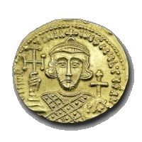

Lösung Puzzle 19: Der Münzenwurf

Münze mit Abbild Kaiser Justinian I. (482-565) www.kirchenrecht.chWenn Anna die Dreierfolge KKZ und Berta die Dreierfolge ZKK hat, gewinnt Anna mit der
Wahrscheinlichkeit 0.25
Beweis: Wenn am Anfang zwei K hintereinander geworfen werden (Wahrscheinlichkeit 0.25), gewinnt Anna, nämlich
sobald das erste Z fällt (KK...Z).
Fängt die Folge aber anders an, ist schon ein Z dabei. Werden nun zum ersten Mal zwei
K hintereinander geworfen (was für einen Gewinn von Anna
notwendig wäre), ist vorher schon ein Z geworfen worden, daher gewinnt in diesem Fall Berta.
Wenn Berta die Folge KZK wählt, so gewinnt Anna mit Wahrscheinlichkeit 2/3
Beweis: Sei x die Wahrscheinlichkeit, mit der Anna gewinnt. Man betrachtet im Prinzip die 8 möglichen Fälle
für die ersten 3 Münzenwürfe: Jeder dieser 8 Fälle tritt also mit Wahrscheinlichkeit 0.125 auf.
KKZ oder KKK: Wie oben gewinnt hier Anna mit Wahrscheinlichkeit 0.25.
KZK: Hier gewinnt natürlich Berta.
KZZ: Hier kann keine der beiden einen Rest dieser
Kombination nutzen (da beide Gewinnkombinationen mit K anfangen)
und daher ist die Wahrscheinlichkeit für einen Gewinn dieselbe wie am Anfang.
Dasselbe gilt auch, wenn gleich am Anfang ein Z (Fälle 5 bis 8) geworfen wird
(Wahrscheinlichkeit 0.5). Daher gilt:
x = 0.25 + 0 + 0.125x + 0.5x , also x = 2/3
©1997 - 2026 www.mathematik.ch |🔍